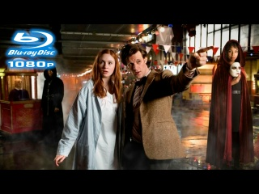
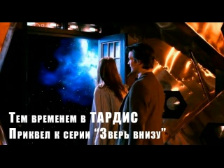
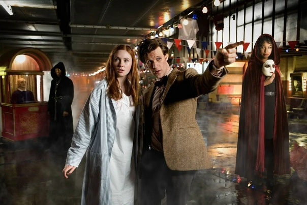
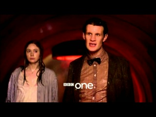

+ DVO [BeeFilm]

Весь 5-й сезон (13 серий)

 + DVO [BeeFilm] | Весь 5-й сезон (13 серий) |
The Beast Below
Дата выхода: 10 апреля 2010
Формат: 45-минутный эпизод
| Варианты озвучек: | * Разные: смотрите по инструкции |
|---|---|
| Скачивание и просмотр: |
Эми и Доктор совершают путешествие в отдалённое будущее и неожиданно попадают на огромный космический корабль под названием «Соединённое Королевство». На этом звездолете вся британская нация мечется среди звезд и галактик, чтобы найти для себя новую планету для жизни. Но старый космолёт имеет свои секреты...
Некто с маской на лице, каким-то образом узнавший Доктора, просит его о помощи. В то же время Эми неожиданно встречается со странными смайлерами и узнает древнюю страшную тайну, о которой все снова и снова забывают...

